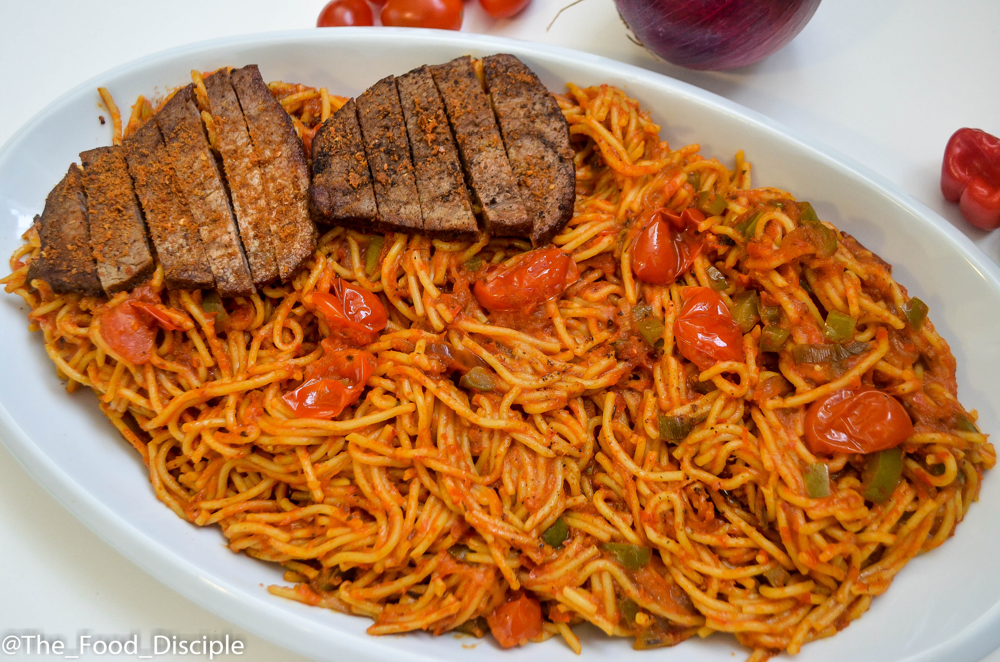

Pastas

Description
Pasta is a very easy dish to prepare and it can be done with a variety of methods, here we're going to specifically prepare jollof spaghetti. It's made by boiling spaghetti and mixing it with a specially prepared sauce.
Ingredients
- Spaghetti
- Tomato paste
- Ground pepper
- Onions
- Salt
- Vegetable oil
- Crayfish
- Seasoning cubes
- Sausages
Steps
- Put the spaghetti in a pot of clean water, add a half teaspoon of salt and boil for 15 minutes.
- Slice the onions and sausages while the spaghetti is cooking.
- Drain the water from the spaghetti then put it aside and cover it.
- Get a clean pot and make sure it's dry then you put it on a low heat.
- Pour the vegetable oil into the pot and let it heat up for about 30 seconds.
- Put the onions in the hot oil and let it fry for about 15 seconds.
- Now you add the tomato paste and ground pepper and let it fry for a few minutes, stir periodically.
- While the sauce is cooking, add the crayfish and sausages.
- Now you add the seasoning cubes and salt to taste.
- Your sauce should be ready in 15 minutes.
- Now you add the spaghetti that was boiled earlier to the sauce and stir it properly.
- And the final step is for you to dish and enjoy your meal.